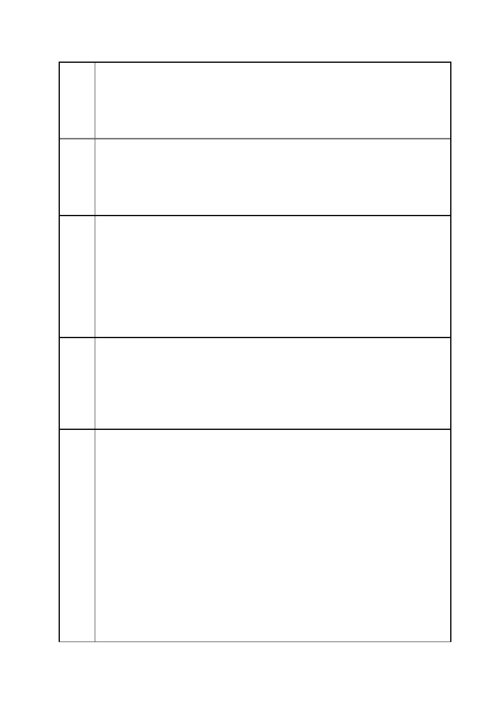

臺北市都市計畫委員會 公民或團體陳情意見綜理表
案
名
建議
辦法
二
陳情
理由
三
建議
辦法
三
市府
回應
「變更臺北市信義區逸仙段二小段 33 地號等 21 筆土地（原臺北機廠）
工業區為創意文化專用區、特定專用區、道路及綠地用地主要計畫案」
及「擬定臺北市信義區逸仙段二小段 33 地號等 21 筆土地（原臺北機
廠）創意文化專用區、特定專用區、道路及綠地用地細部計畫暨劃定
都市更新地區計畫案」
本案開發單位不宜切割為兩個分屬於中央及地方政府單位，倘若因捐
地之必要性而須切割時。也應有文化資產相關單位後續一併監督並整
合不同基地開發案間之規劃。例如：針對主要計畫第 12-13 頁有關文
化資產整體地景保存，需有文化資產相關單位負責後續開發之監督與
建議。
本案主要計畫第 20-21 頁計畫目標與規劃原則一、二點，外加主計第
27 頁開發計畫及財務規劃構想（附件二）中所敘述之開發機能與構
想中所舉上海／日本案例中不停強調”高層發展”（細計第 8 頁特定專
用區（一）說明）。
期望引進產業與基地周邊大規模已開發／開發中區域同質性過高，恐
產生相互競爭排擠的效應。
商業設施過分集中下，在無法達到都市更新提升周圍市民合宜生活環
境的遠景下，反而使本基地開發的社會成本外部化。
都市更新的主體為國民／市民，都市計畫（都市更新）的精神為改善
居民生活環境，並促進市、鎮、鄉街有計畫之均衡發展。
本都市計畫之變更後續應納入民眾參與機制，以合作代替對抗，同時
確保文化資產（中華民國國民）與社區生活（台北市民）不會犧牲在
政府機關本位主義與各自為政的開發行為下。
備註：請求列席都委會說明。
一、有關計畫區西側 15M 南北向道路之規劃，因應臺北文化體育園
區未來開發完成後衍生之交通需求，大巨蛋 BOT 契約載明開闢北延
道路紓解交通負荷為市府應辦事項，松菸 BOT 亦於招標文件將北延
道路列為市府承諾事項，本府爰於 99 年公告實施「變更臺北文化體
育園區北側第三種工業區為道路用地細部計畫案」，該道路已開闢完
成，現況除作為松菸文創園區車輛進出道路外，未來臺北文化體育園
區部分車輛出入口亦由前述道路進出。本府進行初期規劃時，考量該
北延道路已開闢完成，且可滿足紓解光復南路及忠孝東路負荷之需
求，本府原擬維持該北延道路之位置與功能，惟申請單位（臺鐵局）
基於建築基地配置考量，仍提案將該道路東移至創意文化園區西側，
南接菸廠路，北接市民大道五段，提供臺北文化體育園區及松菸文創
園區車輛出入口進出功能。惟該北延道路東移至博物館用地及公園用
地西側，確實對於扇型鐵軌之完整性造成影響，市府在兼顧文化資產
及開發利益下於都市設計準則亦已要求就鐵道紋理予以原位置原貌
第 34 頁/共 154 頁